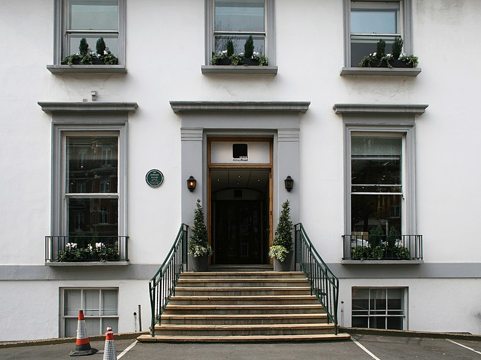

본문 콘텐츠영역
"We're more popular than Jesus now;
I don't know which will go first - rock and roll or Christianity".
John Lennon, 1966.
ABOUT
The Beatles were an English rock band formed in Liverpool in 1960. With a line-up comprising John Lennon, Paul McCartney, George Harrison and Ringo Starr, they are regarded as the most influential band of all time and were integral to the development of 1960s counterculture and popular music's recognition as an art form. Rooted in skiffle, beat and 1950s rock and roll, their sound incorporated elements of classical music and traditional pop in innovative ways; the band later explored music styles ranging from ballads and Indian music to psychedelia and hard rock. As pioneers in recording, songwriting and artistic presentation, the Beatles revolutionised many aspects of the music industry and were often publicised as leaders of the era's youth and sociocultural movements.
Led by primary songwriters Lennon and McCartney, the Beatles evolved from Lennon's previous group, the Quarrymen, and built their reputation playing clubs in Liverpool and Hamburg over three years from 1960, initially with Stuart Sutcliffe playing bass. The core trio of Lennon, McCartney and Harrison, together since 1958, went through a succession of drummers, including Pete Best, before asking Starr to join them in 1962. Manager Brian Epstein moulded them into a professional act, and producer George Martin guided and developed their recordings, greatly expanding their domestic success after their first hit, "Love Me Do", in late 1962. As their popularity grew into the intense fan frenzy dubbed "Beatlemania", the band acquired the nickname "the Fab Four", with Epstein, Martin and other members of the band's entourage sometimes given the informal title of "fifth Beatle".

HISTORY
1956-1963: Formation
Main entrance at EMI Studios (now Abbey Road Studios, pictured 2007)
The Quarrymen and name changes In November 1956, John Lennon, then aged sixteen, formed a skiffle group with several friends from Quarry Bank High School in Liverpool. They briefly called themselves the Blackjacks, before changing their name to the Quarrymen after discovering that another local group were already using the name. Fifteen-year-old Paul McCartney met Lennon in July 1957, and joined as a rhythm guitarist shortly after. In February 1958, McCartney invited his friend George Harrison, then fifteen, to watch the band. Harrison auditioned for Lennon, impressing him with his playing, but Lennon initially thought Harrison was too young. After a month's persistence, during a second meeting (arranged by McCartney), Harrison performed the lead guitar part of the instrumental song "Raunchy" on the upper deck of a Liverpool bus, and they enlisted him as lead guitarist.
Early residencies and UK popularity Allan Williams, the Beatles' unofficial manager, arranged a residency for them in Hamburg. They auditioned and hired drummer Pete Best in mid-August 1960. The band, now a five-piece, departed Liverpool for Hamburg four days later, contracted to club owner Bruno Koschmider for what would be a 3½-month residency. Beatles historian Mark Lewisohn writes: "They pulled into Hamburg at dusk on 17 August, the time when the red-light area comes to life ... flashing neon lights screamed out the various entertainment on offer, while scantily clad women sat unabashed in shop windows waiting for business opportunities."
First EMI recordings Epstein courted the band over the next couple of months, and they appointed him as their manager in January 1962. Throughout early and mid-1962, Epstein sought to free the Beatles from their contractual obligations to Bert Kaempfert Productions. He eventually negotiated a one-month early release in exchange for one last recording session in Hamburg. On their return to Germany in April, a distraught Kirchherr met them at the airport with news of Sutcliffe's death the previous day from a brain haemorrhage. Epstein began negotiations with record labels for a recording contract. To secure a UK record contract, Epstein negotiated an early end to the band's contract with Polydor, in exchange for more recordings backing Tony Sheridan. After a New Year's Day audition, Decca Records rejected the band, saying, "Guitar groups are on the way out, Mr. Epstein." However, three months later, producer George Martin signed the Beatles to EMI's Parlophone label.
1963-1966: Beatlemania and touring years
The Beatles performing on The Ed Sullivan Show, February 1964
The Beatles arriving at John F. Kennedy International Airport, 7 February 1964
Please Please Me and With the Beatles On 11 February 1963, the Beatles recorded ten songs during a single studio session for their debut LP, Please Please Me. It was supplemented by the four tracks already released on their first two singles. Martin considered recording the LP live at The Cavern Club, but after deciding that the building's acoustics were inadequate, he elected to simulate a "live" album with minimal production in "a single marathon session at Abbey Road". After the moderate success of "Love Me Do", the single "Please Please Me" was released in January 1963, two months ahead of the album. It reached number one on every UK chart except Record Retailer, where it peaked at number two.
First visit to the United States and the British Invasion EMI's American subsidiary, Capitol Records, hindered the Beatles' releases in the United States for more than a year by initially declining to issue their music, including their first three singles. Concurrent negotiations with the independent US label Vee-Jay led to the release of some, but not all, of the songs in 1963. Vee-Jay finished preparation for the album Introducing... The Beatles, comprising most of the songs of Parlophone's Please Please Me, but a management shake-up led to the album not being released.[nb 3] After it emerged that the label did not report royalties on their sales, the licence that Vee-Jay had signed with EMI was voided. A new licence was granted to the Swan label for the single "She Loves You". The record received some airplay in the Tidewater area of Virginia from Gene Loving of radio station WGH and was featured on the "Rate-a-Record" segment of American Bandstand, but it failed to catch on nationally.
A Hard Day's Night Capitol Records' lack of interest throughout 1963 did not go unnoticed, and a competitor, United Artists Records, encouraged their film division to offer the Beatles a three-motion-picture deal, primarily for the commercial potential of the soundtracks in the US. Directed by Richard Lester, A Hard Day's Night involved the band for six weeks in March–April 1964 as they played themselves in a musical comedy. The film premiered in London and New York in July and August, respectively, and was an international success, with some critics drawing a comparison with the Marx Brothers.
1966-1970: Studio years
Front cover of Sgt. Pepper's Lonely Hearts Club Band, "the most famous cover of any music album, and one of the most imitated images in the world"
The Beatles, known as "the White Album" for its minimalist cover, conceived by pop artist Richard Hamilton "in direct contrast to Sgt. Pepper", while also suggesting a "clean slate"
Sgt. Pepper's Lonely Hearts Club Band Freed from the burden of touring, the Beatles embraced an increasingly experimental approach as they recorded Sgt. Pepper's Lonely Hearts Club Band, beginning in late November 1966. According to engineer Geoff Emerick, the album's recording took over 700 hours. He recalled the band's insistence "that everything on Sgt. Pepper had to be different. We had microphones right down in the bells of brass instruments and headphones turned into microphones attached to violins. We used giant primitive oscillators to vary the speed of instruments and vocals and we had tapes chopped to pieces and stuck together upside down and the wrong way around." Parts of "A Day in the Life" featured a 40-piece orchestra. The sessions initially yielded the non-album double A-side single "Strawberry Fields Forever"/"Penny Lane" in February 1967; the Sgt. Pepper LP followed with a rush-release in May. The musical complexity of the records, created using relatively primitive four-track recording technology, astounded contemporary artists. Among music critics, acclaim for the album was virtually universal.
India retreat, Apple Corps and the White Album In February 1968, the Beatles travelled to Maharishi Mahesh Yogi's ashram in Rishikesh, India, to take part in a three-month meditation "Guide Course". Their time in India marked one of the band's most prolific periods, yielding numerous songs, including a majority of those on their next album. However, Starr left after only ten days, unable to stomach the food, and McCartney eventually grew bored and departed a month later. For Lennon and Harrison, creativity turned to question when an electronics technician known as Magic Alex suggested that the Maharishi was attempting to manipulate them. When he alleged that the Maharishi had made sexual advances to women attendees, a persuaded Lennon left abruptly just two months into the course, bringing an unconvinced Harrison and the remainder of the group's entourage with him. In anger, Lennon wrote a scathing song titled "Maharishi", renamed "Sexy Sadie" to avoid potential legal issues. McCartney said, "We made a mistake. We thought there was more to him than there was."
Abbey Road, Let It Be and separation Although Let It Be was the Beatles' final album release, it was largely recorded before Abbey Road. The project's impetus came from an idea Martin attributes to McCartney, who suggested they "record an album of new material and rehearse it, then perform it before a live audience for the very first time – on record and on film". Originally intended for a one-hour television programme to be called Beatles at Work, in the event much of the album's content came from studio work beginning in January 1969, many hours of which were captured on film by director Michael Lindsay-Hogg. Martin said that the project was "not at all a happy recording experience. It was a time when relations between the Beatles were at their lowest ebb." Lennon described the largely impromptu sessions as "hell ... the most miserable ... on Earth", and Harrison, "the low of all-time". Irritated by McCartney and Lennon, Harrison walked out for five days. Upon returning, he threatened to leave the band unless they "abandon[ed] all talk of live performance" and instead focused on finishing a new album, initially titled Get Back, using songs recorded for the TV special. He also demanded they cease work at Twickenham Film Studios, where the sessions had begun, and relocate to the newly finished Apple Studio. His bandmates agreed, and it was decided to salvage the footage shot for the TV production for use in a feature
1970-present: After the break-up
John Lennon in 1975
Paul McCartney in 1976
George Harrison in 1987
Ringo Starr in 1987
1970s Lennon, McCartney, Harrison and Starr all released solo albums in 1970. Their solo records sometimes involved one or more of the others; Starr's Ringo (1973) was the only album to include compositions and performances by all four ex-Beatles, albeit on separate songs. With Starr's participation, Harrison staged the Concert for Bangladesh in New York City in August 1971. Other than an unreleased jam session in 1974, later bootlegged as A Toot and a Snore in '74, Lennon and McCartney never recorded together again.
1980s In December 1980, Lennon was shot and killed outside his New York City apartment. Harrison rewrote the lyrics of his song "All Those Years Ago" in Lennon's honour. With Starr on drums and McCartney and his wife, Linda, contributing backing vocals, the song was released as a single in May 1981. McCartney's own tribute, "Here Today", appeared on his Tug of War album in April 1982. In 1984 Starr joined McCartney to star in Paul's film Give My Regards to Broad Street, and played with Paul on several of the songs on the soundtrack. In 1987, Harrison's Cloud Nine album included "When We Was Fab", a song about the Beatlemania era.
1990s Live at the BBC, the first official release of unissued Beatles performances in seventeen years, appeared in 1994. That same year McCartney, Harrison and Starr collaborated on the Anthology project. Anthology was the culmination of work begun in 1970, when Apple Corps director Neil Aspinall, their former road manager and personal assistant, had started to gather material for a documentary with the working title The Long and Winding Road. Documenting their history in the band's own words, the Anthology project included the release of several unissued Beatles recordings. McCartney, Harrison and Starr also added new instrumental and vocal parts to songs recorded as demos by Lennon in the late 1970s.
2000s The Beatles' 1, a compilation album of the band's British and American number-one hits, was released on 13 November 2000. It became the fastest-selling album of all time, with 3.6 million sold in its first week and 13 million within a month. It topped albums charts in at least 28 countries. The compilation had sold 31 million copies globally by April 2009. Harrison died from metastatic lung cancer in November 2001. McCartney and Starr were among the musicians who performed at the Concert for George, organised by Eric Clapton and Harrison's widow, Olivia. The tribute event took place at the Royal Albert Hall on the first anniversary of Harrison's death.
MEMBERS
John Winston Ono Lennon (born John Winston Lennon; 9 October 1940 - 8 December 1980) was an English singer, songwriter, musician and peace activist who achieved worldwide fame as the founder, co-songwriter, co-lead vocalist and rhythm guitarist of the Beatles. Lennon was characterised by the rebellious nature and acerbic wit in his music, writing and drawings, on film, and in interviews. His songwriting partnership with Paul McCartney remains the most successful in history.
Paul McCartney Sir James Paul McCartney CH MBE (born 18 June 1942) is an English singer, songwriter, musician, and record and film producer who gained worldwide fame as co-lead vocalist, co-songwriter, and bassist for the Beatles. One of the most successful composers and performers of all time, he is known for his melodic approach to bass-playing, his versatile and wide tenor vocal range, and his musical eclecticism, exploring styles ranging from pre-rock 'n' roll pop to classical and electronica. His songwriting partnership with John Lennon remains the most successful in history.
George Harrison George Harrison MBE (25 February 1943 - 29 November 2001) was an English musician, singer-songwriter, and music and film producer who achieved international fame as the lead guitarist of the Beatles. Sometimes called "the quiet Beatle", Harrison embraced Indian culture and helped broaden the scope of popular music through his incorporation of Indian instrumentation and Hindu-aligned spirituality in the Beatles' work. Although the majority of the band's songs were written by John Lennon and Paul McCartney, most Beatles albums from 1965 onwards contained at least two Harrison compositions. His songs for the group include "Taxman", "Within You Without You", "While My Guitar Gently Weeps", "Here Comes the Sun" and "Something".
Ringo Starr Sir Richard Starkey MBE (born 7 July 1940), better known by his stage name Ringo Starr, is an English musician, singer, songwriter and actor who achieved international fame as the drummer for the Beatles. He occasionally sang lead vocals with the group, usually for one song on each album, including "Yellow Submarine", "With a Little Help from My Friends" and "I Wanna Be Your Man". He also wrote and sang the Beatles' songs "Don't Pass Me By" and "Octopus's Garden", and is credited as a co-writer of others.